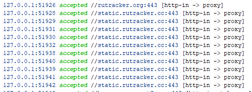

Доброго времени суток.
Хочу уточнить вот какой вопрос - с такими правилами rr*.googlevideo.com будет же напрямую работать, без vpn? То есть будет исключён из geosite:youtube. Или я чисто интуитивно неправильно понял логику работы?
{kind=link}
Вы идете на geosite:youtube через vpn и YT будет сообщать вам зарубежные адреса для googlevideo (кроме случая, когда он спалил адрес vpn как ru - например из-за авторизации в учетке), на которые вы пойдете напрямую с непредсказуемым итогом.
Ну, мне не сильно принципиально зарубежные googlevideo-сервера будут при этом или нет. Меня интересует будет ли к ним всё-таки direct-доступ или через vpn. Так сказать для экономии траффика самого vpn 
Итог предсказуем — у меня работает так уже более 10-ти лет, начал использовать для обхода региональных ограничений. Первый кусок видео он загрузит с GGC региона прокси, а затем будет подключатся к ближайшему GGC. Сейчас приходится *.googlevideo.com дополнительно через byedpi пускать.
Вот у меня по сути тоже именно с этой целью такой конфиг. И да, параллельно работает zapret - так что на саму блокировку rr*.googlevideo.com-серверов мне плевать.
Спасибо за разъяснение, значит настроил всё как мне надо. Тему можно закрывать.
Подскажите пожалуйста, в чем может быть проблема с Rutracker ?
Есть два сервера, один в испании, другой в нидерландак, настроены идентично но имеют разных хостеров.
На одном из хостеров рутрекер открывается в следующем виде
{kind=link}
словно что-то непрогрузилось
но статик.рутрекер добавлен в машрутизацию, с той лишь разницей что на нормальном прокси при открытии rutracker одна запись с проксированием статик.рутрекер, а тут много строчек

В какую сторону смотреть чтобы пофиксить это ? Никакие файрволы заереты на сервере не настраивал (все настройки аналогичные другому серверу на котором всё отображается прекрасно)
Строчки accepted говрят только о том, что запрос был отправлен на сервер, но это не значит что на него пришел ответ. Тут надо смотреть логи сервера, состоялись ли подключения к rutracker.cc
Подскажите, как в новых (4.Х) версиях nekobox переключить ядро на x-ray. Сейчас доступно только sing-box.
{kind=link}
Никак - Supporting Xray core in version 4 · Issue #1337 · MatsuriDayo/nekoray · GitHub.
А как дополнительное ядро, можно использовать? Не понятно вообще, как эти ядра работают, как об это будет известно?
Народ, я тут влезу с вопросом о маршрутизации, если вы не против.
Есть виндовой Nekobox 4.2.6 и в нём есть правило для процессов Таркова, что бы ходил прямо:
{
“outbound”: “direct”,
“process_name”: [
“EscapeFromTarkov.exe”,
“EscapeFromTarkov_BE.exe”,
“BsgLauncher.exe”
]
}
Так вот почему-то не ходит прямо, судя по симптомам. То есть когда поднято соединение через один из моих VPS, которые не нравятся хостеру таркова, игра не соединяется.
Что настроено неправильно? Вообще как должно правило для любых exe работать?